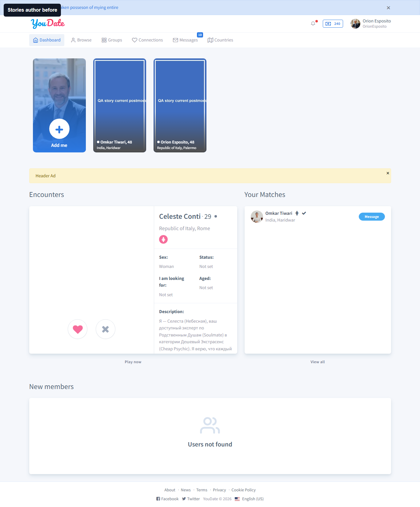
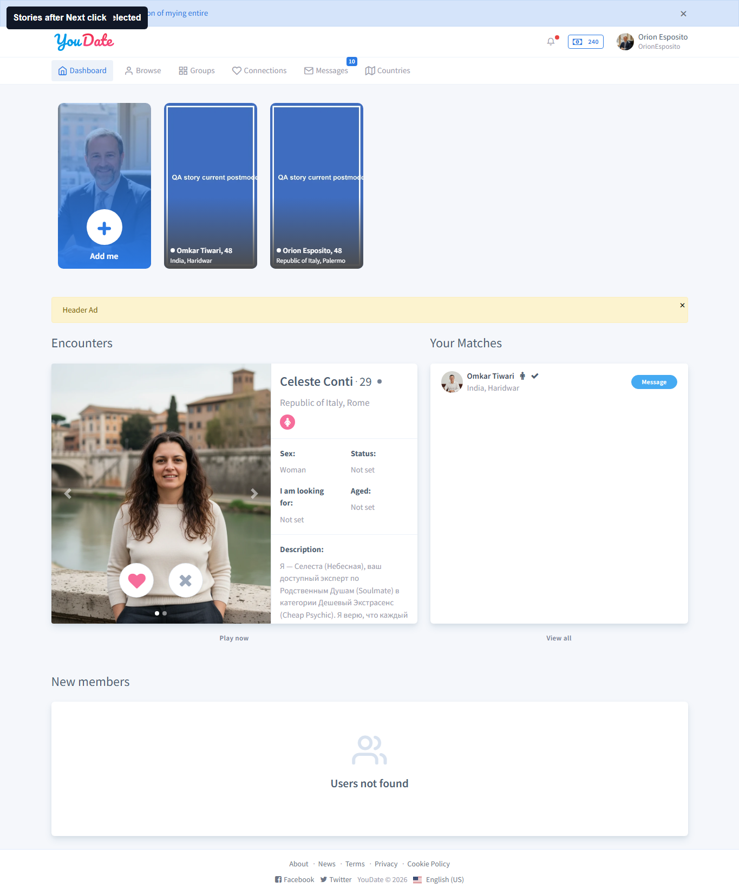
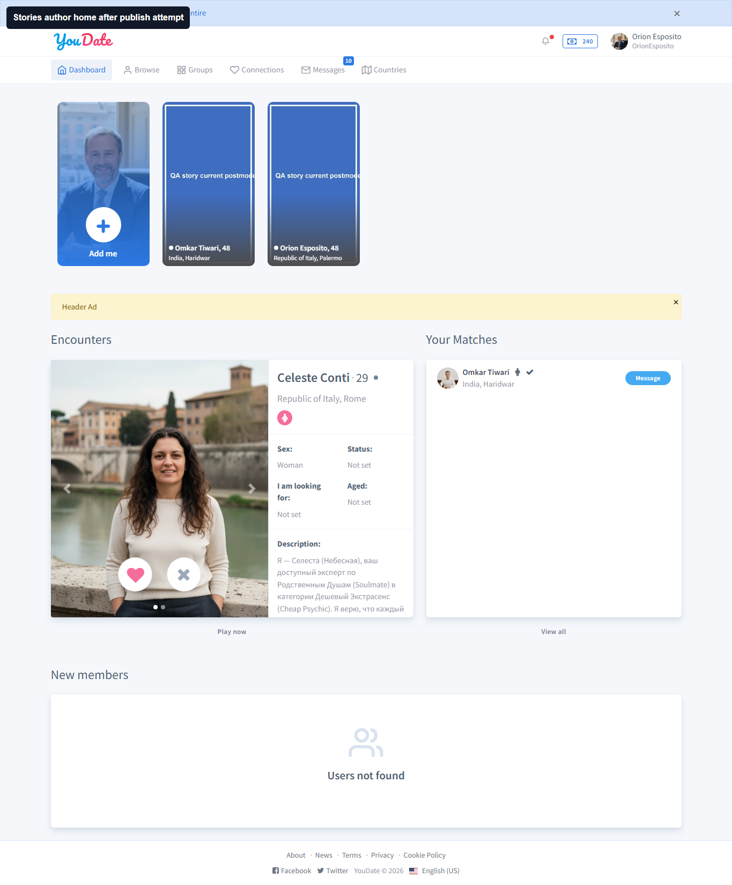
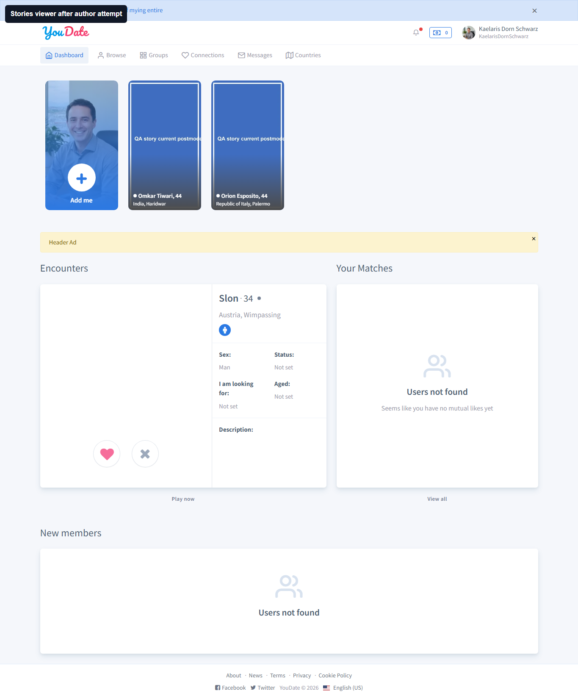

Stories existing-photo publish flow
Свежий live-проход: stories settings прочитаны, existing photo radio найден, но после Next modal закрывается и cropper/preview не открывается. Visibility owner/viewer намеренно INVALID, потому что новая story не была опубликована.
Settings: storiesOn=true, mode=postmoderation, allowedTimeNextStory=1. Автор U184 OrionEsposito, viewer U166 KaelarisDornSchwarz.
Блок для Игоря
| Severity | ID | Суть | Как искать |
|---|---|---|---|
| high | STORIES-EXISTING-PHOTO-NEXT-001 | Stories existing-photo publish: Next closes modal but does not open cropper/preview | Игорю проверить JS обработчик #spotlight-submit-form submit: после fetch(imageUrl)=200 и установки File в #general-uploaded-image должен сработать formStoriesMedia afterValidateAttribute и cropEditor.run(inputEl), но cropper не открывается. |
Проверки
| Статус | ID | Что тестировал | Что получил |
|---|---|---|---|
| PASS | STORIES-CURRENT-SETTINGS | Текущие настройки stories прочитаны из админки | storiesOn=true, mode=postmoderation, allowedTimeNextStory=1. |
| PASS | STORIES-EXISTING-PHOTO-MODAL | В modal stories есть существующие фото для публикации | Найдено existing photo radio inputs: 2. |
| FAIL | STORIES-EXISTING-PHOTO-NEXT-OPENS-CROPPER | Next после выбора существующего фото открывает cropper/preview | После выбора photo radio и клика Next modal закрылась, S3 image fetch вернул 200, но cropper/preview не открылся. |
| INVALID | STORIES-AUTHOR-VISIBILITY-AFTER-PUBLISH | Автор видит опубликованную story в carousel | Visibility не оценивается: existing-photo flow не дошел до publish, поэтому старые story-card нельзя считать доказательством новой публикации. |
| INVALID | STORIES-VIEWER-VISIBILITY-AFTER-PUBLISH | Второй пользователь видит story автора в carousel | Visibility не оценивается: existing-photo flow не дошел до publish, поэтому проверка второго пользователя не доказывает новую story. |
Evidence screenshots



